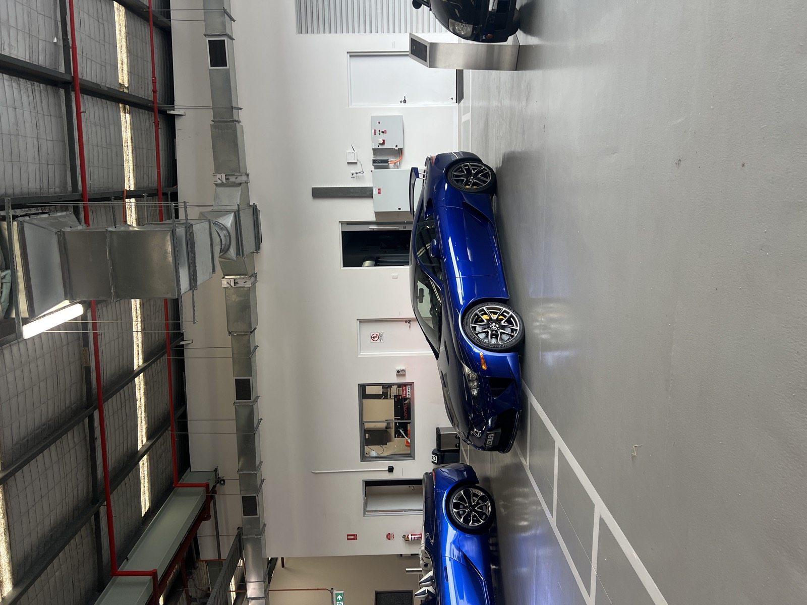
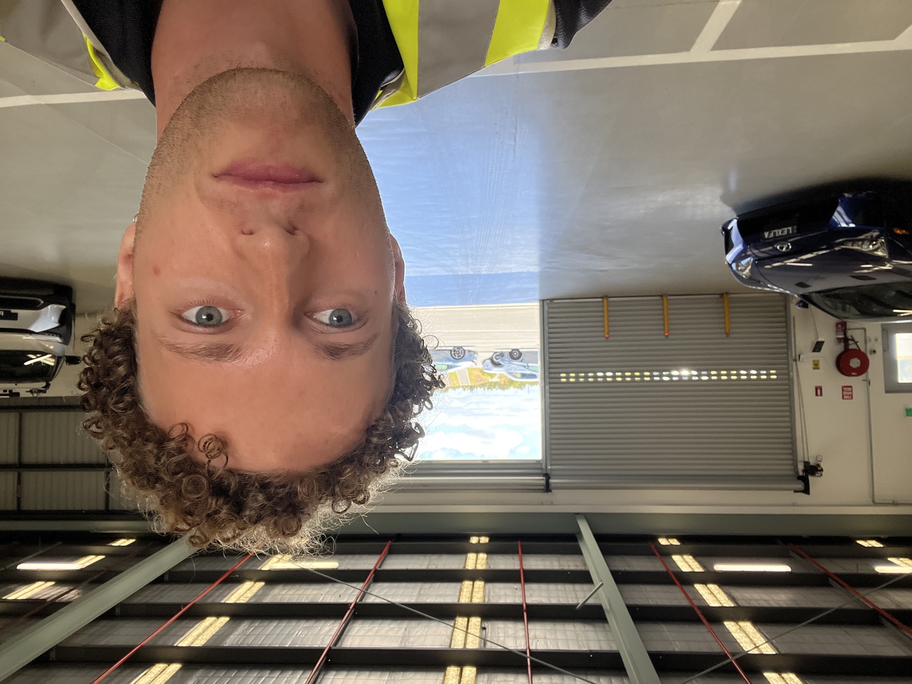
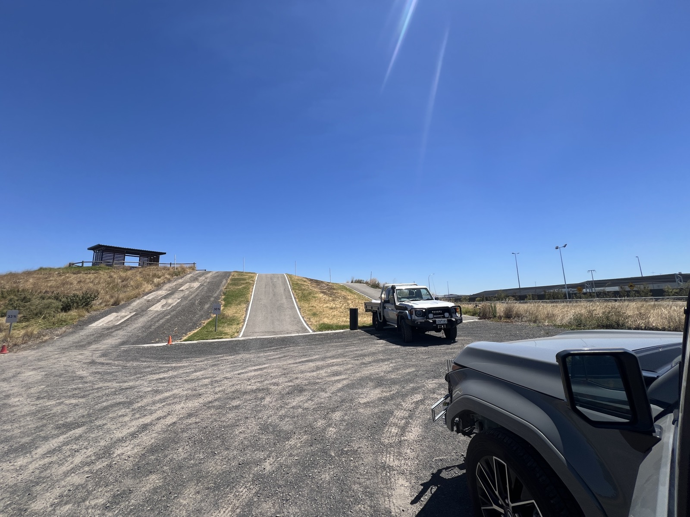
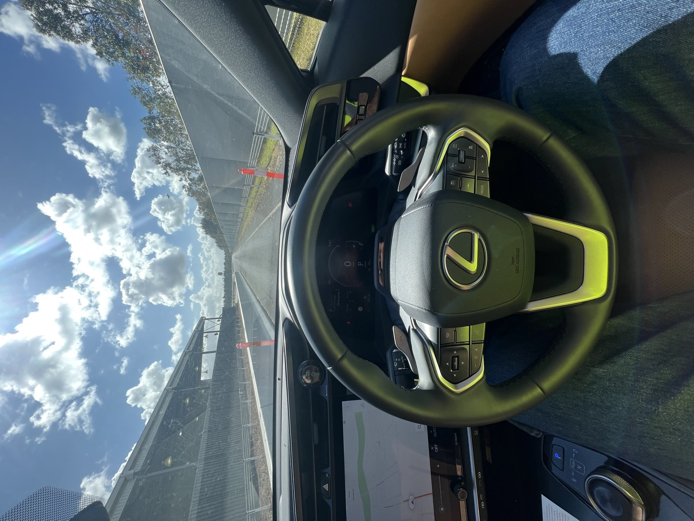
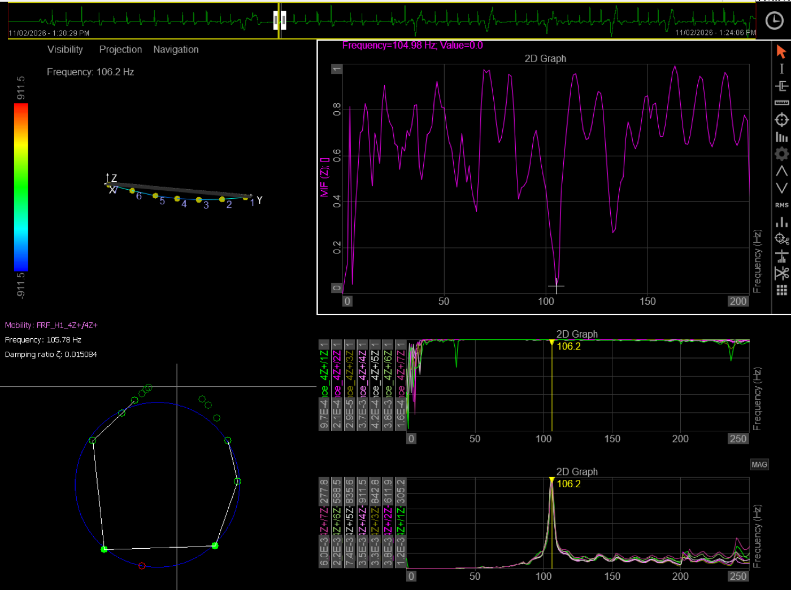
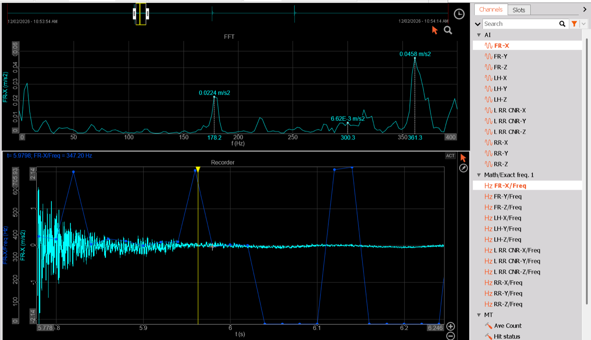

Role Overview
I was placed within Toyota's Product Planning and Development division, working alongside experienced engineers to support the mechanical design and operational efficiency of current and upcoming vehicle programmes.
| Company | Toyota Motor Corporation Australia |
| Division | Product Planning and Development |
| Role | Undergraduate Engineer |
| Period | November 2025 – March 2026 |

Lexus LFA — Testing facility
Responsibilities
- Part fitment — verifying physical fit of components against design intent and production tolerances
- CAD modelling in CATIA to support design changes and documentation
- Field testing — conducting structured vehicle tests and recording data for engineering review
- FEA validation — running and interpreting finite element analyses to confirm structural performance
- Data analysis to identify trends and support design optimisation decisions
- Strain gauging and vibration analysis



Vehicle evaluation — Lexus at the Toyota proving ground during on-road testing.
Vibration Analysis & Physical FEA Validation
A key part of the role involved physically validating FEA predictions through experimental vibration testing. Using Dewesoft data acquisition software with Brüel & Kjær (B&K) accelerometers and strain gauges, I instrumented test articles and recorded vibration response data to compare against simulation outputs.
I also documented a standardised method for using a modal hammer to extract more accurate natural frequency measurements — capturing frequency response functions (FRFs) and fitting mode shapes from the acquired data. This approach provided higher confidence natural frequency results than sine sweep methods alone, and the documented procedure was left for the team's ongoing use.


Example of Dewesoft analysis software I used for Strain Gauging and Modal Analysis.